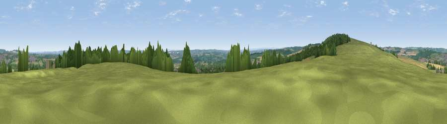

Viewpoint near Brandon
#19746 in England · top 45% of its area beats it · near BrandonWhere it is
The exact computed spot (NZ 22875 39975). Click the marker for map links.
The view, rendered

A 360° render of this exact spot computed from the terrain model, tree cover and land cover — summer colours, afternoon light, calibrated against photographs of famous viewpoints. Real trees, hedges and buildings will differ in detail.
The panorama
Grey silhouette: terrain skyline in each direction (720 bearings, Earth curvature and refraction included). Dashed green: skyline with trees (+15 m) and buildings (+8 m) as obstacles. Blue strip: how far the ground is visible on each bearing.
Where the view opens
Wedge length = distance to the farthest visible ground on that bearing (vegetation-aware). Rings at 10, 25 and 50 km.
What fills the view
45% grassland · 25% cropland · 24% woodland · 6% built-up
Angular shares of the visible panorama (visual magnitude), not map area. Landscape diversity 0.53 (0–1 Shannon).
Key numbers
More beautiful places nearby
The staircase of upgrades: each row has a higher view potential than everything closer. Driving times are estimates from straight-line distance, calibrated against real road routing — check an actual route before setting out.
| Place | Direction | Drive | Score |
|---|---|---|---|
| Viewpoint near New Brancepeth | WNW · 1 km | ~3 min | 60.6 |
| Brandon Hill | W · 2 km | ~6 min | 69.7 |
| Viewpoint near Billy Row | WSW · 7 km | ~14 min | 70.3 |
| Viewpoint near Edmondsley | N · 8 km | ~16 min | 72.6 |
| Viewpoint near Quarrington Hill | E · 10 km | ~20 min | 73.1 |
| Pontop Pike | NNW · 15 km | ~27 min | 77.8 |
| Viewpoint near Newton Under Roseberry | SE · 39 km | ~58 min | 78.3 |
| Viewpoint near Lazenby | ESE · 40 km | ~60 min | 86.4 |
54.75421, -1.64610 · source: screening · position refined by local search. Computed location — check access rights before visiting.